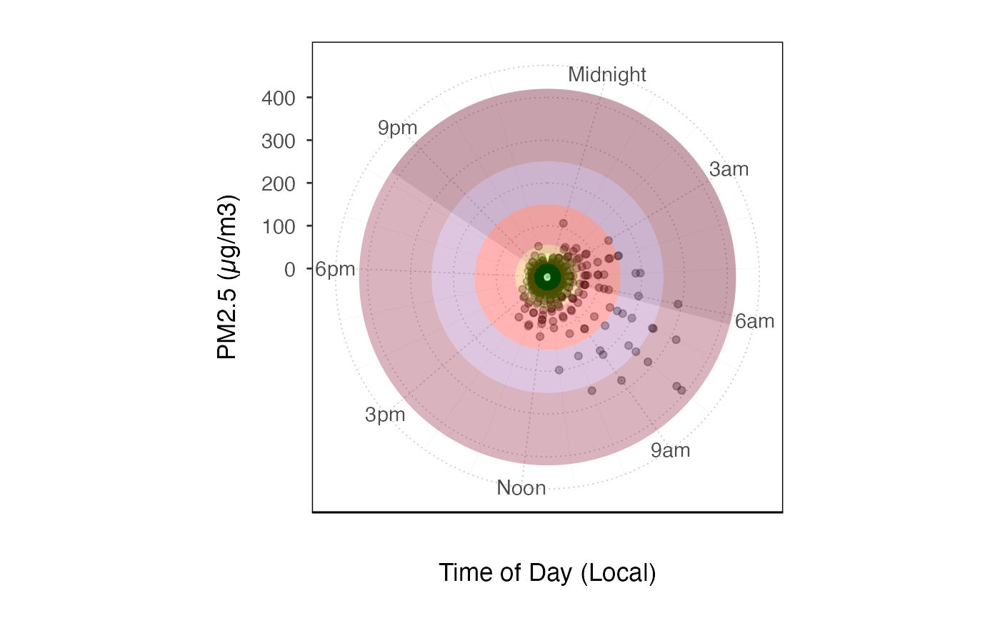
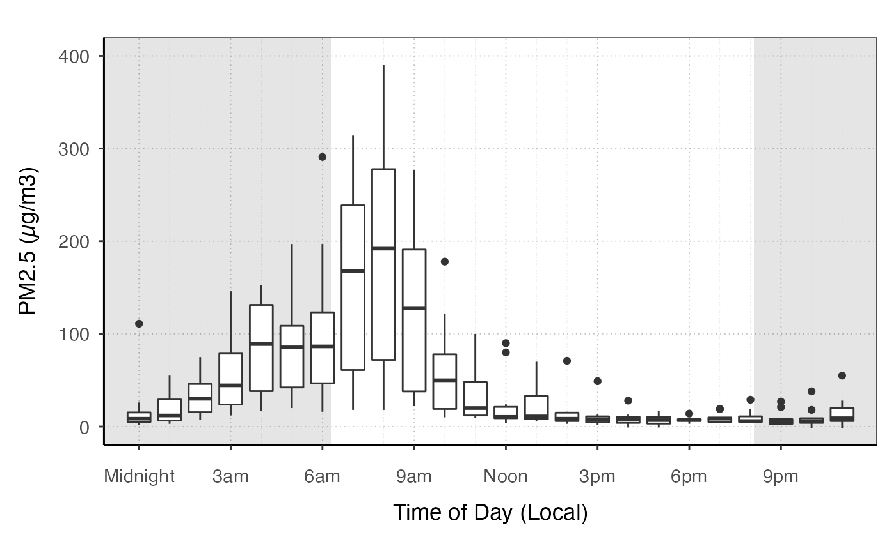

Create a plot with default mappings and styling. Layers can then
be added to this plot using ggplot2 syntax.
ggplot_pm25Diurnal(
monitor,
startdate = NULL,
enddate = NULL,
timezone = NULL,
ylim = NULL,
shadedNight = TRUE,
mapping = aes_(x = ~hour, y = ~pm25),
base_size = 11,
...
)Default dataset to use when adding layers. Must be either a
mts_monitor object or mts_tidy object.
Desired startdate for data to include, in a format that can be parsed with parseDatetime.
Desired enddate for data to include, in a format that can be parsed with parseDatetime.
Timezone to use to set hours of the day.
custom y-axis limits. This function will apply a default limit depending on the data.
add nighttime shading based on of middle day in selected period.
Default mapping for the plot.
Base font size for theme.
Additional arguments passed on to
custom_pm25DiurnalScales.
monitor <- AirMonitor::Carmel_Valley
ggplot_pm25Diurnal(monitor) +
coord_polar() +
geom_pm25Points() +
custom_aqiStackedBar(width = 1, alpha = .3)
#> Warning: The following aesthetics were dropped during statistical transformation: x and
#> y.
#> ℹ This can happen when ggplot fails to infer the correct grouping structure in
#> the data.
#> ℹ Did you forget to specify a `group` aesthetic or to convert a numerical
#> variable into a factor?
#> Warning: Removed 9 rows containing missing values or values outside the scale range
#> (`geom_pm25points()`).

ggplot_pm25Diurnal(
monitor,
startdate = 20160801,
enddate = 20160810
) +
stat_boxplot(aes(group = hour))
#> Warning: Removed 7 rows containing non-finite outside the scale range
#> (`stat_boxplot()`).
